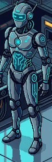
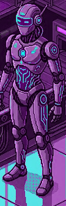
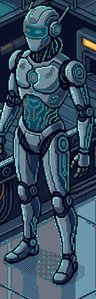

Headless core + React components. Everything below is a token role or a component state — no decorative rules. Theme loses every fight with legibility.
v0.3 · 2026-09-27 · vocabulary simplified by the owner: Outpost → Station, Clearance → Tool, Relay → Handoff, Hand → Agent, Sortie → Routine run, Assayer → Overseer (Manifest and the Reach unchanged) · tool chip is now the capitalized tool name over a lighter read / write line, two rows, h 40 · the octagon core is 192×232 to hold the hero rig · ink.3 lightness raised for AA contrast.
v0.2 · 2026-09-27 · added the failed run state (token, glow, pose, motion, components) · overseer hero rig confirmed as its own 48×64 symbol, §09 contradiction removed · idle and done motion adopted from the product brief (bob + blink, pop + check) alongside the working loop · React replaces Vue.
Vocabulary lives in UI and schema. Schema keys are lowercase, plural collections, singular refs. Plain word is the tooltip, always.
| concept | UI noun | schema key | verb | note |
|---|---|---|---|---|
| whole map | the Reach | reach | — | root document; one per repo |
| team | Station | outposts[] | Found | mission is a required string |
| permission scope | Standing orders | outpost.orders | Edit | holds repos[] + clearances[] |
| grant | Tool | orders.clearances[] · mode: read | write | Clear / Revoke | "Clear Notion for read" |
| handoff | Handoff | relays[] · from, to | Open / Close | always directional; A↔B is two records, one lane |
| agent | Agent | outpost.hands[] | Enlist / Release | exactly one outpost |
| persona file | Persona | hand.commission | Edit | name, mandate, tone, allowlist, rig palette |
| ledger | Manifest | outpost.manifest (path) | — | the cargo a relay carries |
| run | Routine run | shifts[] · startedAt, endedAt, state | — | read-only; never "Start shift" in the UI. Write "⇧" never "Shift" for the key |
| overseer | Overseer PLACEHOLDER · unlicensable | overseer | — | singleton; key stays overseer so the display name can change |
Dark is cool (hue 265); light is warm paper (hue 80) — Blade Runner night, Dune day. Every accent shares one chroma/lightness per theme and varies hue only. Selection is achromatic so it never competes with a status hue. One hue = one meaning, never reused.
IBM Plex Sans for UI, IBM Plex Mono for anything that is evidence: timestamps, paths, shas, manifest lines, eyebrow labels. OFL-licensed, ships with the package. Two weights of each (400/500, 600 for headings only). Mono is never decorative — if it's mono, it came from a file or a clock.
Chip text is label-13 or caption-12, never smaller. Minimum on the map at 100% zoom: 12px. Below 60% map zoom, hand names hide and outposts show only name + health dot.
4px base. Radius steps down with nesting so each container reads as inside the last: outpost 16 → hand card 8 → tool chip 4. Panel is 12 because it sits beside the map, not inside an outpost. The outpost emblem (the "globe") is the only full circle.
Motion is proof, not theater: state transitions animate only what the last sortie actually recorded. Two loops exist. Idle is a slow one-unit bob with a visor blink every few seconds, so a hand reads as present, not frozen. Working is the only loop that carries meaning: glow, breathe, arms alternating, head nod — and it plays only while a sortie is provably open. Done and failed are one-shot transitions. Reduced motion: every animation collapses to a 120ms opacity change; packets render as a static dot at the reading end; bob and blink stop.
| state change | animates? | how |
|---|---|---|
| idle → working | yes | rig glow (visor, joints, trace) → run.working (fast), breathe loop starts on the hand card ring |
| idle (loop) | yes | bob: the whole figure translates 1 unit down and back over dur.breathe, ease.breathe · blink: the visor glow band drops to rig.visor for dur.instant every 4–6 s (randomized per hand so a team never blinks in unison) |
| working (loop) | yes | glow stays run.working · arms alternate between the two body poses every dur.packet · head nods 1 unit at dur.breathe · hand card ring breathes |
| working → done | yes | pop: figure scales to 108% and back over dur.fast, ease.standard; a check glyph lights in the accessory slot (glow = run.done) and stays for the rest of the sortie view. Loop stops in the same frame. |
| working → failed | yes | figure dims to 60% and glow → run.failed over dur.fast; an exclaim glyph lights in the accessory slot. Bob and blink stop — a failed thing holds still. No pulse, ever. |
| manifest written + relay exists | yes | one packet per relay per shift, dur.packet; lane → lane.carrying for the ride, then lane.default over dur.base |
| clearance used in shift | yes | chip tint 16% → 35% (fast in), hold, fade out (base). Only during replay of a recorded shift |
| health change | yes | dot color crossfade, dur.base. Stalled never pulses — a stuck thing should look stuck |
| selection | yes | ring fades in (fast); connected lanes → lane.emphasis; unconnected outposts dim to 60% (base) |
| panel open / close | yes | slide 16px + fade, base / exit. Map re-centers over dur.slow |
| config edited (draft) | no | dashed border appears instantly; drafts are not events |
| overseer reconciling | yes | inbound packets converge on the core; core ring brightens per arrival (fast), no loop of its own |
Quantized vector, not pixel art. One SVG symbol on a 24×32 unit grid, every shape a grid-snapped rect, shape-rendering: crispEdges, rendered only at integer scales (1×/2×/4×). Reads as a sprite, ships as vector, recolors through CSS variables. The register is the slim chrome android: a domed head with two small antennae and a full glowing visor, ball-joint shoulders, a narrow segmented torso carrying a core trace, thin articulated arms and long legs with lit joints, chrome plating over a dark inner frame. Light is state: visor, joints and trace glow only while the hand is provably working. Nothing organic, nothing armed.
Machine-traced from the reference at 4px/cell, colors clustered into primary / secondary / frame / highlight / glow, then hand-masked. It proves the format can carry this much detail and still recolor from three variables — but at 3× it is 243px tall, so it is a panel and editor asset, not a card one. Proposed: this proportion set becomes the target for a clean hand-drawn 32×80 hero-resolution rig; the 24×32 card rig is redrawn to match its silhouette (head ratio, shoulder width, leg length) and used at 1× only.
Same schema, same states, same palette contract — the choice is how the picture gets made. The headless core doesn't care; only the Vue rig component swaps.



Hybrid: the world is a 16×16 quantized disc (the emblem, the only circle in the system); the settlement is a 1–4 unit mark on its horizon that encodes what the outpost is for, and the panel is the DOM body where hands and clearances live. World = identity, settlement = mission category, panel = state. Settlements never grow with hand count or shifts run — size is not progress.
Prefix Ow. Headless core emits select · hover · open · commit; Vue layer owns DOM. State axes are orthogonal — a hand card is run × selection × emphasis, never a single enum.